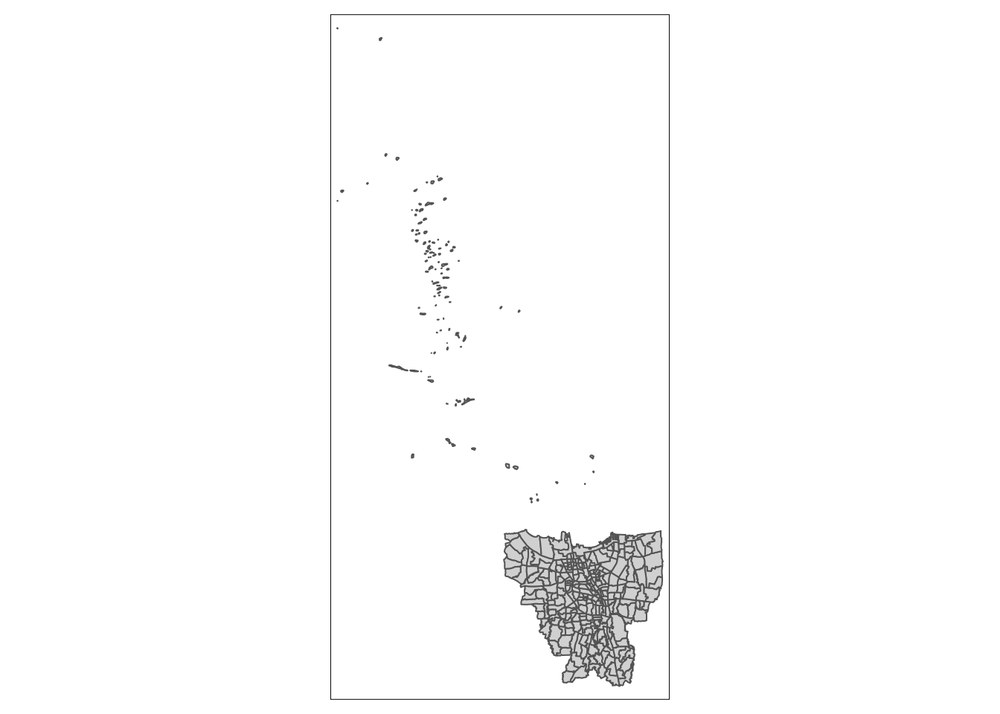
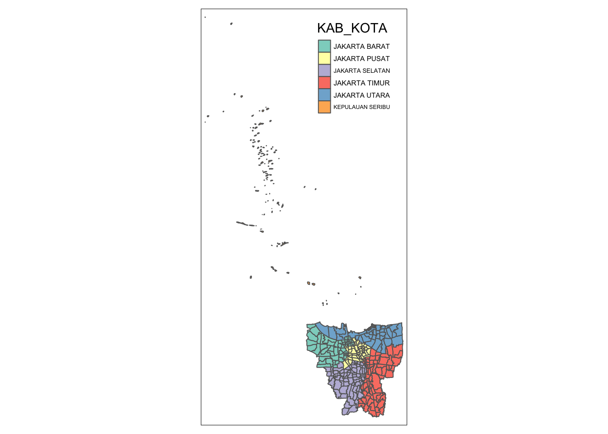
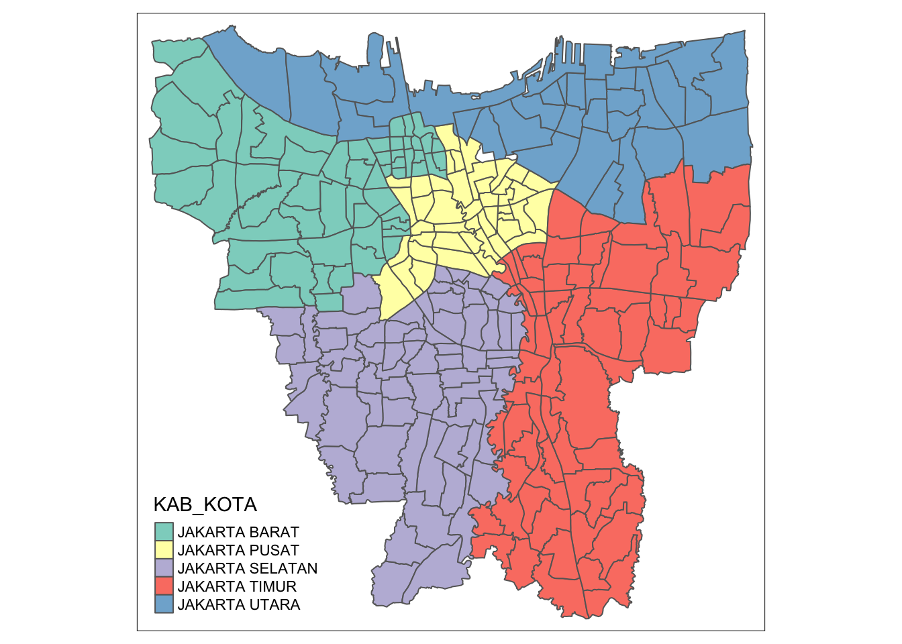
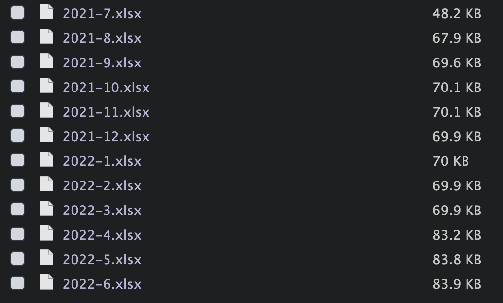
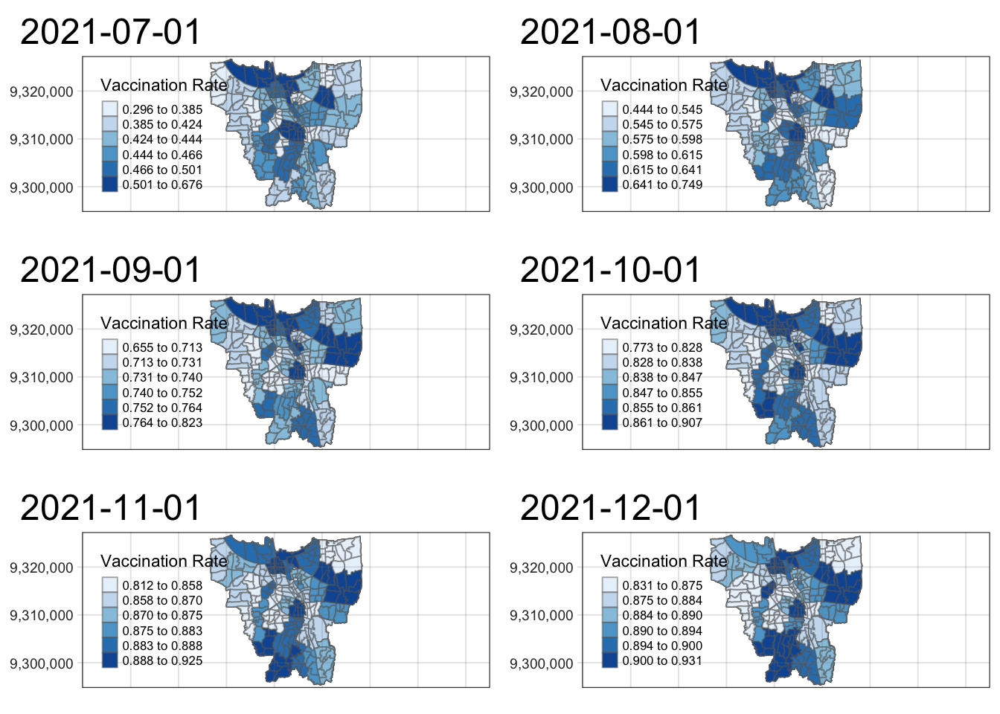
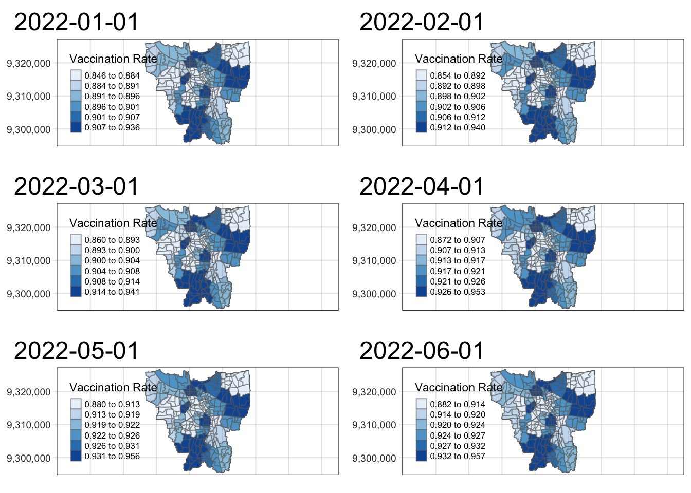
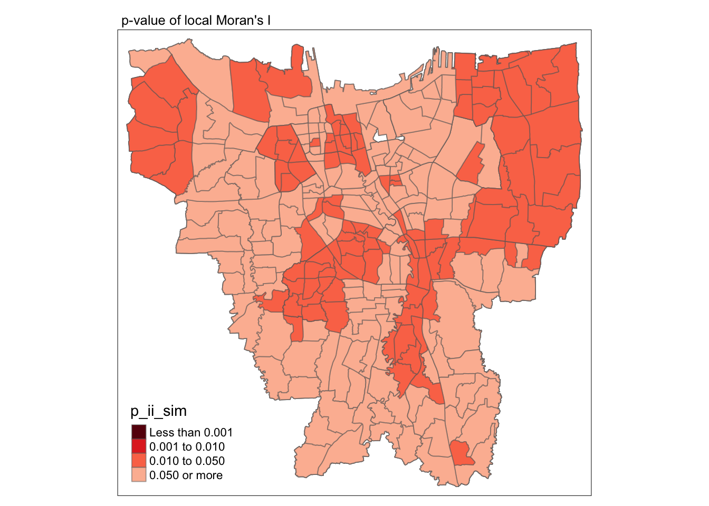
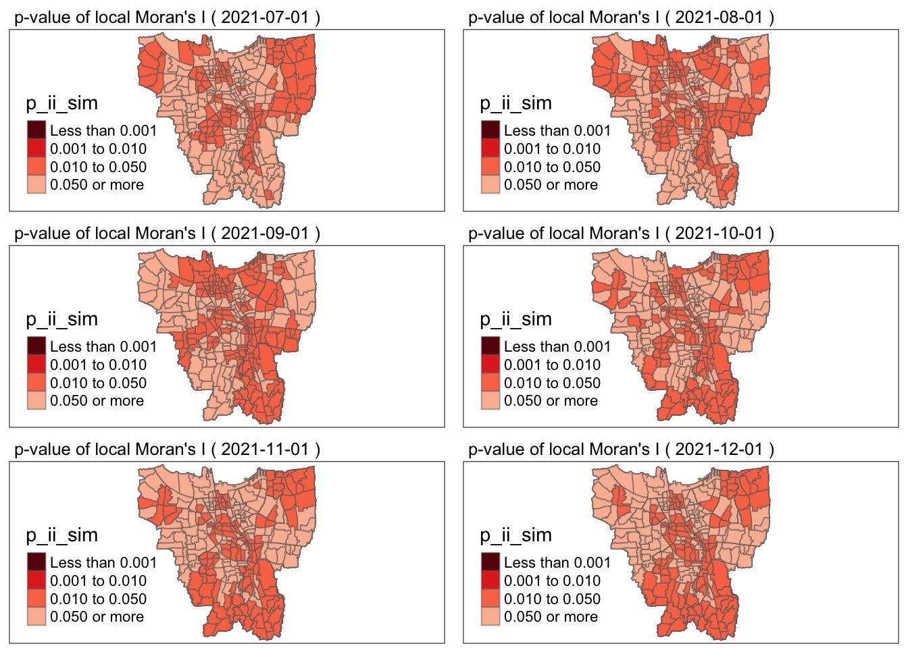

pacman::p_load(sf, raster, spatstat, tmap, tidyverse, sfdep, maptools, readxl, spdep)Take-Home Exercise 2: Spatio-temporal analysis of COVID-19 Vaccination Trends at the Sub-district Level, DKI Jarkarta
1 Context
Since the outbreak of COVID-19, many countries have rushed to create a vaccine and ensure its population is well immunized against this novel coronavirus. On 13 January 2021, the mass immunisation program commenced and since then Indonesia ranks third in Asia and fifth in the world in terms of total doses given.
In this take-home assignment, we will be exploring vaccination rates in DKI Jarkarta, identifying sub-districts with relatively higher number of vaccination rate and how they changed over time.
The tasks given to us is as follows:
Choropleth Mapping and Analysis
Compute the monthly vaccination rate from July 2021 to June 2022 at sub-district (also known as kelurahan in Bahasa Indonesia) level,
Prepare the monthly vaccination rate maps by using appropriate tmap functions,
Describe the spatial patterns revealed by the choropleth maps (not more than 200 words).
Local Gi* Analysis
With reference to the vaccination rate maps prepared in ESDA:
Compute local Gi* values of the monthly vaccination rate,
Display the Gi* maps of the monthly vaccination rate. The maps should only display the significant (i.e. p-value < 0.05)
With reference to the analysis results, draw statistical conclusions (not more than 250 words).
Emerging Hot Spot Analysis(EHSA)
With reference to the local Gi* values of the vaccination rate maps prepared in the previous section:
Perform Mann-Kendall Test by using the spatio-temporal local Gi* values,
Select three sub-districts and describe the temporal trends revealed (not more than 250 words), and
Prepared a EHSA map of the Gi* values of vaccination rate. The maps should only display the significant (i.e. p-value < 0.05).
With reference to the EHSA map prepared, describe the spatial patterns revelaed. (not more than 250 words).
Throughout this page, each step will be explained and guided so that you can follow along.
2 The Set Up
2.1 Packages Used
The R packages used for this analysis are:
sf
tidyverse
spatstat
tmap
sfdep
maptools
readxl
The code chunk below checks whether the packages have been installed, if not it will automatically install them and load the packages into Rstudio.
2.2 The Data
| Type | Name | Format | Description |
|---|---|---|---|
| Geospatial | Batas Desa Provinsi DKI Jakarta | shapefile | Sub-districts in DKI Jakarta |
| Aspatial | Riwayat File Vaksinasi DKI Jakarta | .xlsx | Sub-district level data of vaccination numbers between July 2021 to June 2022 |
- Geospatial Data
The link under Geospatial Data above brings you to a page where there are many download links sorted by province. Ensure that you are using Shapefile (SHP) Batas Desa Provinsi DKI Jakarta.
- Aspatial Data
The link under Aspatial Data above brings you to a page where there are two types of data files you can use. Please choose Data Vaksinasi Berbasis Kelurahan dan Kecamatan and download a total of 12 files beginning July 2021 to June 2022.
Do note that we will be using the beginning of each month for our download.
3 Data Wrangling
3.1 Geospatial Data
3.1.1 Import Geospatial Data
geoDKI <- st_read(dsn = "data/geospatial",
layer = "BATAS_DESA_DESEMBER_2019_DUKCAPIL_DKI_JAKARTA")Reading layer `BATAS_DESA_DESEMBER_2019_DUKCAPIL_DKI_JAKARTA' from data source
`/Users/junhaoteo/Documents/junhao2309/IS415/Take-Home_Ex/Take-Home_Ex02/data/geospatial'
using driver `ESRI Shapefile'
Simple feature collection with 269 features and 161 fields
Geometry type: MULTIPOLYGON
Dimension: XY
Bounding box: xmin: 106.3831 ymin: -6.370815 xmax: 106.9728 ymax: -5.184322
Geodetic CRS: WGS 84From the output above, we can see that the data set has a geometry type, Multipolygon, and has 269 features and 161 fields.
3.1.2 Check for invalid geometries
Before we begin, we should check whether there are any invalid geometries by using the code chunk below:
st_is_valid(geoDKI) [1] TRUE TRUE TRUE TRUE TRUE TRUE TRUE TRUE TRUE TRUE TRUE TRUE TRUE TRUE TRUE
[16] TRUE TRUE TRUE TRUE TRUE TRUE TRUE TRUE TRUE TRUE TRUE TRUE TRUE TRUE TRUE
[31] TRUE TRUE TRUE TRUE TRUE TRUE TRUE TRUE TRUE TRUE TRUE TRUE TRUE TRUE TRUE
[46] TRUE TRUE TRUE TRUE TRUE TRUE TRUE TRUE TRUE TRUE TRUE TRUE TRUE TRUE TRUE
[61] TRUE TRUE TRUE TRUE TRUE TRUE TRUE TRUE TRUE TRUE TRUE TRUE TRUE TRUE TRUE
[76] TRUE TRUE TRUE TRUE TRUE TRUE TRUE TRUE TRUE TRUE TRUE TRUE TRUE TRUE TRUE
[91] TRUE TRUE TRUE TRUE TRUE TRUE TRUE TRUE TRUE TRUE TRUE TRUE TRUE TRUE TRUE
[106] TRUE TRUE TRUE TRUE TRUE TRUE TRUE TRUE TRUE TRUE TRUE TRUE TRUE TRUE TRUE
[121] TRUE TRUE TRUE TRUE TRUE TRUE TRUE TRUE TRUE TRUE TRUE TRUE TRUE TRUE TRUE
[136] TRUE TRUE TRUE TRUE TRUE TRUE TRUE TRUE TRUE TRUE TRUE TRUE TRUE TRUE TRUE
[151] TRUE TRUE TRUE TRUE TRUE TRUE TRUE TRUE TRUE TRUE TRUE TRUE TRUE TRUE TRUE
[166] TRUE TRUE TRUE TRUE TRUE TRUE TRUE TRUE TRUE TRUE TRUE TRUE TRUE TRUE TRUE
[181] TRUE TRUE TRUE TRUE TRUE TRUE TRUE TRUE TRUE TRUE TRUE TRUE TRUE TRUE TRUE
[196] TRUE TRUE TRUE TRUE TRUE TRUE TRUE TRUE TRUE TRUE TRUE TRUE TRUE TRUE TRUE
[211] TRUE TRUE TRUE TRUE TRUE TRUE TRUE TRUE TRUE TRUE TRUE TRUE TRUE TRUE TRUE
[226] TRUE TRUE TRUE TRUE TRUE TRUE TRUE TRUE TRUE TRUE TRUE TRUE TRUE TRUE TRUE
[241] TRUE TRUE TRUE TRUE TRUE TRUE TRUE TRUE TRUE TRUE TRUE TRUE TRUE TRUE TRUE
[256] TRUE TRUE TRUE TRUE TRUE TRUE TRUE TRUE TRUE TRUE TRUE TRUE TRUE TRUEst_is_valid() from the sf package helps to check whether a geometry is valid. From the output, there are no invalid geometries.
3.1.3 Check for Missing values
The code chunk below uses is.na() from base R checks whether the data set has NA values. which() from base R takes the indices of these values and lastly length() helps us calculate the length of the data objects.
length(which(is.na(geoDKI) == TRUE))[1] 14In the above output, there are 14 NA values within the jakarta data set.
To remove them, we can simply use na.exclude to delete the rows with NA values
geoDKI <- na.omit(geoDKI)We can run the same code to see whether all NA values have been removed.
length(which(is.na(geoDKI) == TRUE))[1] 0Nice! All NA values have been removed.
3.1.4 Check Coordinate System
As different countries use different projection systems, we need to first check the CRS of jakarta.
The code chunk below uses st_crs() from the sf package:
st_crs(geoDKI)Coordinate Reference System:
User input: WGS 84
wkt:
GEOGCRS["WGS 84",
DATUM["World Geodetic System 1984",
ELLIPSOID["WGS 84",6378137,298.257223563,
LENGTHUNIT["metre",1]]],
PRIMEM["Greenwich",0,
ANGLEUNIT["degree",0.0174532925199433]],
CS[ellipsoidal,2],
AXIS["latitude",north,
ORDER[1],
ANGLEUNIT["degree",0.0174532925199433]],
AXIS["longitude",east,
ORDER[2],
ANGLEUNIT["degree",0.0174532925199433]],
ID["EPSG",4326]]We notice that jakarta is using EPSG::4326 which is the wrong projection coordinate system. DKI Jakarta uses the DGN95, the ‘Datum Geodesi Nasional 1995’, EPSG::23878
We can transform the crs by using st_transform() from the sf package:
geoDKI <- geoDKI %>%
st_transform(crs = 23878)st_crs(geoDKI)Coordinate Reference System:
User input: EPSG:23878
wkt:
PROJCRS["DGN95 / UTM zone 48S",
BASEGEOGCRS["DGN95",
DATUM["Datum Geodesi Nasional 1995",
ELLIPSOID["WGS 84",6378137,298.257223563,
LENGTHUNIT["metre",1]]],
PRIMEM["Greenwich",0,
ANGLEUNIT["degree",0.0174532925199433]],
ID["EPSG",4755]],
CONVERSION["UTM zone 48S",
METHOD["Transverse Mercator",
ID["EPSG",9807]],
PARAMETER["Latitude of natural origin",0,
ANGLEUNIT["degree",0.0174532925199433],
ID["EPSG",8801]],
PARAMETER["Longitude of natural origin",105,
ANGLEUNIT["degree",0.0174532925199433],
ID["EPSG",8802]],
PARAMETER["Scale factor at natural origin",0.9996,
SCALEUNIT["unity",1],
ID["EPSG",8805]],
PARAMETER["False easting",500000,
LENGTHUNIT["metre",1],
ID["EPSG",8806]],
PARAMETER["False northing",10000000,
LENGTHUNIT["metre",1],
ID["EPSG",8807]]],
CS[Cartesian,2],
AXIS["(E)",east,
ORDER[1],
LENGTHUNIT["metre",1]],
AXIS["(N)",north,
ORDER[2],
LENGTHUNIT["metre",1]],
USAGE[
SCOPE["Engineering survey, topographic mapping."],
AREA["Indonesia - south of equator and between 102°E and 108°E - onshore and offshore."],
BBOX[-10.73,102,0,108.01]],
ID["EPSG",23878]]From the output above, we can see that the CRS has been properly assigned.
3.1.5 Removing Outer Islands
Let us visualise the geographical polygons.
qtm(geoDKI)
We can see from the output that jakarta includes both the mainland and the outer islands. Our study area focuses only on the mainland and thus we need to remove them.
View(geoDKI)Before we continue further, we need to understand how DKI Jakarta geographical regions are segmented. The code chunk above lets you view the entire dataset. Let us understand the key variables below:
With the help of uncle google, we will translate the names.
| Name | Translation |
|---|---|
| KODE_DESA | Village Code |
| DESA | Village |
| PROVINSI | Province |
| KAB_KOTA | City |
| KECAMATAN | District |
| DESA_KELUR | Sub-District |
KAB_KOTA would be the most logical choice in isolating out the outer islands.
The code chunk below helps to output unique values in KAB_KOTA field.
unique(geoDKI$KAB_KOTA)[1] "JAKARTA BARAT" "JAKARTA PUSAT" "KEPULAUAN SERIBU" "JAKARTA UTARA"
[5] "JAKARTA TIMUR" "JAKARTA SELATAN" The output above shows that there are 6 major cities in DKI Jakarta.
The codechunk below will visualize the data with respect to the 6 major cities. We can then see which city isolates out the outer islands.
tmap_mode("plot")
tm_shape(geoDKI) +
tm_polygons("KAB_KOTA")
From the visualization above, we can see that KEPULAUAN SERIBU is not part of the mainland. We can then use filter() from dplyr package to remove the outer islands.
geoDKI <- filter(geoDKI, KAB_KOTA !="KEPULAUAN SERIBU")tm_shape(geoDKI) +
tm_polygons("KAB_KOTA")
Now we can see that our shapefile only contains the mainland, which is our study area.
Now, before we move on, geoDKI has alot of columns. Since we are only interested in the subdistrict level, we will select we will select those that are relevant to our analysis and rename them:
geoDKI <- geoDKI %>%
select(7, "geometry") %>%
rename(subdistrict=`KECAMATAN`)3.2 Aspatial Data
3.2.1 Import Aspatial Data
Before we import the data in, the file names are rather long. First, go to your data folder and change the aspatial data file names to Y-M format. It would look like this:

There are a total of 12 excel files we need to load into Rstudio. To read the files more efficiently, we will use the “for loop” function to read all the excel files into a data frame by using the read_excel() from the readxl package.
# Set the working directory to the folder containing the Excel files
setwd("data/aspatial/")
# Get a list of all Excel files in the directory
aspatial_data <- list.files(pattern = ".xlsx")
# Loop through the files and read each one into a data frame
for (i in aspatial_data) {
assign(gsub(".xlsx", "", i), read_excel(i))
}3.2.2 Columns of interest and its translation
In the aspatial data set, what we want is the total vaccination and not vaccinated numbers, along with these 4 regional classification columns.
names(`2022-6`) [1] "KODE KELURAHAN"
[2] "WILAYAH KOTA"
[3] "KECAMATAN"
[4] "KELURAHAN"
[5] "SASARAN"
[6] "BELUM VAKSIN"
[7] "JUMLAH\r\nDOSIS 1"
[8] "JUMLAH\r\nDOSIS 2"
[9] "JUMLAH\r\nDOSIS 3"
[10] "TOTAL VAKSIN\r\nDIBERIKAN"
[11] "LANSIA\r\nDOSIS 1"
[12] "LANSIA\r\nDOSIS 2"
[13] "LANSIA\r\nDOSIS 3"
[14] "LANSIA TOTAL \r\nVAKSIN DIBERIKAN"
[15] "PELAYAN PUBLIK\r\nDOSIS 1"
[16] "PELAYAN PUBLIK\r\nDOSIS 2"
[17] "PELAYAN PUBLIK\r\nDOSIS 3"
[18] "PELAYAN PUBLIK TOTAL\r\nVAKSIN DIBERIKAN"
[19] "GOTONG ROYONG\r\nDOSIS 1"
[20] "GOTONG ROYONG\r\nDOSIS 2"
[21] "GOTONG ROYONG\r\nDOSIS 3"
[22] "GOTONG ROYONG TOTAL\r\nVAKSIN DIBERIKAN"
[23] "TENAGA KESEHATAN\r\nDOSIS 1"
[24] "TENAGA KESEHATAN\r\nDOSIS 2"
[25] "TENAGA KESEHATAN\r\nDOSIS 3"
[26] "TENAGA KESEHATAN TOTAL\r\nVAKSIN DIBERIKAN"
[27] "TAHAPAN 3\r\nDOSIS 1"
[28] "TAHAPAN 3\r\nDOSIS 2"
[29] "TAHAPAN 3\r\nDOSIS 3"
[30] "TAHAPAN 3 TOTAL\r\nVAKSIN DIBERIKAN"
[31] "REMAJA\r\nDOSIS 1"
[32] "REMAJA\r\nDOSIS 2"
[33] "REMAJA\r\nDOSIS 3"
[34] "REMAJA TOTAL\r\nVAKSIN DIBERIKAN" | Name | Translation |
|---|---|
| KODE KELURAHAN | Village Code |
| WILAYAH KOTA | City Region |
| KECAMATAN | Sub-District |
| KELURAHAN | Ward |
| TOTAL VAKSIN\r\nDIBERIKAN | Total Vaccination |
| BELUM VAKSIN | Not Vaccinated |
3.2.3 Mutate Aspatial Data
3.2.3.1 Mutating using for loop
As there are 12 data sets, we will use the for loop that mutate, rename and select the fields that we want. The code chunk below does the following:
- Renames KODE KELURAHAN, WILAYAH KOTA, KECAMATAN, KELURAHAN, TOTAL VAKSIN\r\nDIBERIKAN and BELUM VAKSIN to village_code, city_region, subdistrict, ward, total_vaccination and not_vaccinated respectively by using rename() from the dplyr package
- Selects the renamed columns by using select() from the dplyr package
- Adds a date column by using mutate() from the dplyr package
All the mutated aspatial data frames are then placed into a list
list_mth<- list(`2021-7`,`2021-8`,`2021-9`,`2021-10`,`2021-11`,`2021-12`,`2022-1`,`2022-2`,`2022-3`,`2022-4`,`2022-5`,`2022-6`)
date <- c("2021-07-01", "2021-08-01", "2021-09-01", "2021-10-01", "2021-11-01", "2021-12-01", "2022-01-01", "2022-02-01", "2022-03-01", "2022-04-01", "2022-05-01", "2022-06-01")
lists <- list()
for (i in c(1:12)){
lists[[i]]<- list_mth[[i]] %>%
rename(city_region =`WILAYAH KOTA`,
subdistrict=`KECAMATAN`,
total_vaccination= `TOTAL VAKSIN\r\nDIBERIKAN`,
not_vaccinated =`BELUM VAKSIN`) %>%
select(city_region, subdistrict, not_vaccinated ,total_vaccination) %>%
mutate(date = as.Date(date[i]),
.before=1)
}3.2.3.2 Combine into a single dataframe from a list of dataframes
Afterwhich, we can use Reduce() and rbind from base R to join all dataframes in the lists as one dataframe.
The code chunk below does this:
aspatial_data <- Reduce(rbind, lists)
glimpse(aspatial_data)Rows: 3,216
Columns: 5
$ date <date> 2021-07-01, 2021-07-01, 2021-07-01, 2021-07-01, 202…
$ city_region <chr> NA, "JAKARTA UTARA", "JAKARTA BARAT", "JAKARTA TIMUR…
$ subdistrict <chr> NA, "PADEMANGAN", "TAMBORA", "KRAMAT JATI", "JATINEG…
$ not_vaccinated <dbl> 5041111, 13272, 16477, 18849, 5743, 15407, 12503, 11…
$ total_vaccination <dbl> 3877757, 10401, 12520, 8945, 4454, 11342, 9125, 1365…We can see from the output that we have the columns that we want in its new name and having 3216 rows.
From the glimpse output, we can see that there are NA values inside the dataframe. If you View the original individual files, you will notice that there will be a row that calculates the total of a respective column and that row contains NA values.
3.2.3.3 Final steps to take
So these are the steps to take,
- Remove the NA rows in the dataframe
- Filter out the outer islands
- You will notice from the output of the code chunk below that outer islands is categorised as KAB.ADM.KEP.SERIBU
unique(aspatial_data$city_region)[1] NA "JAKARTA UTARA" "JAKARTA BARAT"
[4] "JAKARTA TIMUR" "JAKARTA SELATAN" "JAKARTA PUSAT"
[7] "KAB.ADM.KEP.SERIBU"- Add in total population and vaccination rate columns
- Formula:
The code chunk below does this:
aspatial_data <- aspatial_data %>%
na.exclude() %>%
filter(city_region != "KAB.ADM.KEP.SERIBU") %>%
mutate(total_population = total_vaccination + not_vaccinated, vaccination_rate = total_vaccination/total_population) %>%
select(date, subdistrict, vaccination_rate)Before we join both aspatial and geospatial data, we have to check whether the subdistrict names match between files. To do so, we will use setdiff() from the dplyr package:
setdiff(aspatial_data$subdistrict, geoDKI$subdistrict)[1] "KRAMAT JATI" "PULO GADUNG" "SETIA BUDI" "PALMERAH" "KALI DERES" setdiff(geoDKI$subdistrict, aspatial_data$subdistrict)[1] "KALIDERES" "PAL MERAH" "SETIABUDI" "PULOGADUNG" "KRAMATJATI"From the output above, we can compare and see that these names usually differ by a spacing. The first output shows the names in aspatial_data while the second output show the names in geoDKI. We will amend geoDKI to match the names in the aspatial_data.
n1 <- which(geoDKI$subdistrict == "KRAMATJATI")
n2 <- index <- which(geoDKI$subdistrict == "PAL MERAH")
n3 <- index <- which(geoDKI$subdistrict == "PULOGADUNG")
n4 <- index <- which(geoDKI$subdistrict == "SETIABUDI")
n5 <- index <- which(geoDKI$subdistrict == "KALIDERES")
for (i in n1) {
geoDKI$subdistrict[i] <- "KRAMAT JATI"
}
for (i in n2) {
geoDKI$subdistrict[i] <- "PALMERAH"
}
for (i in n3) {
geoDKI$subdistrict[i] <- "PULO GADUNG"
}
for (i in n4) {
geoDKI$subdistrict[i] <- "SETIA BUDI"
}
for (i in n5) {
geoDKI$subdistrict[i] <- "KALI DERES"
}Done! Now we can just do the same check, we will notice that the output is character(0) meaning that both columns names have matched.
setdiff(aspatial_data$subdistrict, geoDKI$subdistrict)character(0)vaccination <- left_join(aspatial_data, geoDKI,
by = "subdistrict")vaccination <- st_as_sf(vaccination) %>%
mutate(date = as.factor(date))4 Choropleth Mapping and Analysis
4.1 Visualizing the data
4.1.1 R Shiny
Something extra to this TakeHome Assignment will be the use of the ShinyApp. This is a short introduction as to how Rshiny works:
- Define the UI:
You will have an input and in this case, we will use selectInput(“dates”, “Pick a month”, date, selected = “July 2021”,multiple = FALSE).
“dates”: This is the variable name to call into the output portion in the server
“Pick a month”: This is a text under the user interface to ask the user to pick a choice
date: This is the vector of choices that they can pick from.
selected = “July 2021” : This sets the choice “July 2021” as the default when starting up the app
multiple = FALSE : Prevents the user from picking multiple options and can only choose 1
- Define Server:
- This is where tmap is used and calls upon the variable name defined in UI which is “dates”.
library(shiny)
date <- c("July 2021", "August 2021", "September 2021", "October 2021", "November 2021", "December 2021", "January 2022", "February 2022", "March 2022", "April 2022", "May 2022", "June 2022")
# Define the UI
ui <- fluidPage(
selectInput("dates", "Pick a month",
date, selected = "July 2021",
multiple = FALSE),
tmapOutput("my_map")
)
# Define the server
server <- function(input, output) {
# Render the tmap in the output element
output$my_map <- renderTmap({
a <- vaccination |>
filter(date == input$dates)
tm_shape(a) +
tm_fill("vaccination_rate",
style = "quantile",
palette ="Blues")
})
}
# Run the app
shinyApp(ui, server)Refer to visual plot : ShinyApp
Note: There are many ways to create and design the shiny app, under the user interface. One example is using a sliderInput() to let the user their zoom level. This can be found under R shiny documentation.
4.1.2 Tmap Visualization
Considering we have 12 months of Tmap visualization to do, it would be better to create a tmap function.
The code chunk below first filters out vaccination dataframe into their respective months and then inputs the filtered dataframe into the tm_shape().
graphing <- function(x){
a <- vaccination %>%
filter(date == x)
tm_shape(a) +
tm_fill("vaccination_rate",
n = 6,
style = "quantile",
palette = "Blues",
title = "Vaccination Rate") +
tm_layout(main.title = paste(x),
main.title.position = "left",
legend.height = 0.8,
legend.width = 0.8,
frame = TRUE) +
tm_borders(alpha = 0.5) +
tm_grid(alpha =0.2)
}We will split the plots into 2 code chunks to reduce the number of graphs in a single output for a clearer view.
tmap_mode("plot")
tmap_arrange(graphing("2021-07-01"),
graphing("2021-08-01"),
graphing("2021-09-01"),
graphing("2021-10-01"),
graphing("2021-11-01"),
graphing("2021-12-01"),
ncol = 2)
tmap_arrange(graphing("2022-01-01"),
graphing("2022-02-01"),
graphing("2022-03-01"),
graphing("2022-04-01"),
graphing("2022-05-01"),
graphing("2022-06-01"),
ncol = 2)
Likewise, this can be done on Rshiny app but this will be covered on a later date when I have attended the Rshiny workshop. :)
4.2 Spatial Patterns observed (200words)
5 Local Gi* Analysis
To bring you back, here is the task assigned in this section:
Compute local Gi* values of the monthly vaccination rate,
Display the Gi* maps of the monthly vaccination rate. The maps should only display the significant (i.e. p-value < 0.05)
With reference to the analysis results, draw statistical conclusions (not more than 250 words)
5.1 Computing Contiguity Spatial Weights
Before we can compute the global spatial autocorrelation statistics, we need to construct the spatial weights of the study area.
Spatial weights: Used to define the neighbourhood relationships between geographical units in the study area.
As we are dealing with 12 different months of vaccination rates, we will have to filter the dataframe to their respective months and calculate their respective weights. Here, we will be using the QUEEN mode and thus the argument: queen =TRUE. The code chunk below shows the function that filters to the selected month and then calculate their weights.
month <- vaccination %>%
filter(date == "2021-07-01")
wm_q <- month %>%
mutate(nb = st_contiguity(geometry),
wt = st_weights(nb,
style = "W"),
.before=1)
wm_qSimple feature collection with 1733 features and 5 fields
Geometry type: MULTIPOLYGON
Dimension: XY
Bounding box: xmin: 686587.9 ymin: 9295420 xmax: 718314.5 ymax: 9326648
Projected CRS: DGN95 / UTM zone 48S
# A tibble: 1,733 × 6
nb wt date subdistr…¹ vacci…² geometry
* <nb> <list> <fct> <chr> <dbl> <MULTIPOLYGON [m]>
1 <int [36]> <dbl [36]> 2021-07-01 PADEMANGAN 0.439 (((705374.9 9319867, 705…
2 <int [18]> <dbl [18]> 2021-07-01 PADEMANGAN 0.439 (((703435.4 9320774, 703…
3 <int [56]> <dbl [56]> 2021-07-01 PADEMANGAN 0.439 (((706161.9 9323032, 706…
4 <int [65]> <dbl [65]> 2021-07-01 TAMBORA 0.432 (((699986.5 9320097, 699…
5 <int [73]> <dbl [73]> 2021-07-01 TAMBORA 0.432 (((700048.7 9320815, 700…
6 <int [56]> <dbl [56]> 2021-07-01 TAMBORA 0.432 (((699332.3 9319111, 699…
7 <int [65]> <dbl [65]> 2021-07-01 TAMBORA 0.432 (((700076.3 9319167, 699…
8 <int [84]> <dbl [84]> 2021-07-01 TAMBORA 0.432 (((700480.1 9320083, 700…
9 <int [68]> <dbl [68]> 2021-07-01 TAMBORA 0.432 (((699283.3 9320010, 699…
10 <int [44]> <dbl [44]> 2021-07-01 TAMBORA 0.432 (((699268 9320073, 69927…
# … with 1,723 more rows, and abbreviated variable names ¹subdistrict,
# ²vaccination_rate5.2 Computing local Moran’s I
Next, we will use local_moran() of the sfdep package to calculate local Moran’s I.
set.seed(1234)
lisa <- wm_q %>%
mutate(local_moran = local_moran(vaccination_rate,
nb,
wt,
nsim = 99),
.before = 1) %>%
unnest(local_moran)5.3 Visualizing p-value of local Moran’s I
tmap_mode("plot")
tm_shape(lisa) +
tm_fill("p_ii_sim",
palette ="-Reds",
breaks=c(-Inf, 0.001, 0.01, 0.05, Inf)) +
tm_borders(alpha = 0.5) +
tm_layout(main.title = "p-value of local Moran's I",
main.title.size = 0.8)
5.4 Putting it all together
As you follow along, these are the 3 main steps to creating the plots required for this section. As mentioned above, we will combine these 3 sections into a single function to calculate the local Gi for each month. The code chunk below takes in input “mth” to filter vaccination to the respective month and calculate the weights and the local Moran’s I. ### Creating the local MI computation function
lisa <- function(mth){
set.seed(1234)
month <- vaccination %>%
filter(date ==mth)
wm_q <- month %>%
mutate(nb = st_contiguity(geometry),
wt = st_weights(nb,
style = "W"),
.before = 1)
result <- wm_q %>%
mutate(local_moran = local_moran(vaccination_rate,
nb,
wt,
nsim = 99),
.before = 1) %>%
unnest(local_moran)
return(result)
}Now we will calculate the local Moran’s I for each month and place it into a list for easy referencing for the plots later.
date = c("2021-07-01", "2021-08-01", "2021-09-01", "2021-10-01", "2021-11-01", "2021-12-01", "2022-01-01", "2022-02-01", "2022-03-01", "2022-04-01", "2022-05-01", "2022-06-01")
lisa_LMI <- list()
for (i in 1:12){
lisa_LMI[[i]] <- lisa(date[i])
}Now we have a list of dataframes with local Moran I computed. Note that lisa_LMI[[1]] refers to July 2021, in ascending order.
5.4.1 Creating the Tmap function
graph_lisa <- function(x){
plot <- tm_shape(x) +
tm_fill("p_ii_sim",
palette ="-Reds",
breaks=c(-Inf, 0.001, 0.01, 0.05, Inf)) +
tm_borders(alpha = 0.5) +
tm_layout(main.title = paste("p-value of local Moran's I", "(",x$date[1],")"),
main.title.size = 0.8)
return(plot)
}tmap_mode("plot")
tmap_arrange(graph_lisa(lisa_LMI[[1]]),
graph_lisa(lisa_LMI[[2]]),
graph_lisa(lisa_LMI[[3]]),
graph_lisa(lisa_LMI[[4]]),
graph_lisa(lisa_LMI[[5]]),
graph_lisa(lisa_LMI[[6]]),
ncol =2)
tmap_arrange(graph_lisa(lisa_LMI[[7]]),
graph_lisa(lisa_LMI[[8]]),
graph_lisa(lisa_LMI[[9]]),
graph_lisa(lisa_LMI[[10]]),
graph_lisa(lisa_LMI[[11]]),
graph_lisa(lisa_LMI[[12]]),
ncol =2)
5.5 Statistical Conclusion (Not more than 250words) :
6 Emerging Hot Spot Analysis(EHSA)
6.1 Creating a Time Series Cube
The code chunk below creates a spatio-temporal cube by using spacetime() from the sfdep package
vaccination_rate_st<- spacetime(aspatial_data,
geoDKI,
.loc_col = "subdistrict",
.time_col = "date")vaccination_rate_nb <- vaccination_rate_st %>%
activate("geometry")
result <- vaccination_rate_nb %>%
mutate(
nb = include_self(st_contiguity(geometry)),
wt = st_weights(nb)) %>%
set_nbs("nb") %>%
set_wts("wt")gi_star <- vaccination_rate_nb %>%
group_by(as.numeric(date)) %>%
mutate(gi_star = local_gstar_perm(aspatial_data,
nb,
wt,
nsim = 99)) %>%
tidyr::unnest(gi_star)HCSA <- wm_idw %>%
mutate(local_Gi = local_gstar_perm(
aspatial_data, nb, wt, nsim = 99),
.before = 1) %>%
unnest(local_Gi)
HCSA